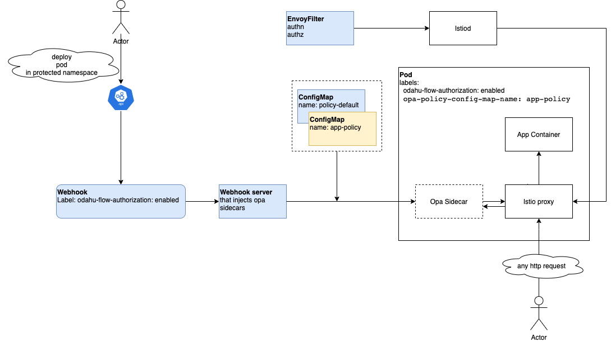

Security subsystem¶
Security subsystem is distributed as a helm chart and relies on OpenPolicyAgent to make decisions about authorization and Istio to enforce authorization for requests to the protected services.
You can read about ODAHU security concepts in an appropriate docs section
Implementation details¶
{kind=link}
Helm chart deploys
- Webhook server that injects OpenPolicyAgent sidecars into pods that labeled by
odahu-flow-authorization=enabled - EnvoyFilter that configures Istio-proxy sidecars located in pods labeled by
odahu-flow-authorization=enabledto force authentication and authorization for all incoming http requests - ConfigMap with common policy that included into all OpenPolicyAgent sidecars and implements masking of a sensitive data
- ConfigMap with default policy that included into OpenPolicyAgent sidecars when pod does not specify ConfigMap with its polices
When the webhook server deploys OpenPolicyAgent sidecar, it attaches policies from ConfigMap. ConfigMap can be found by
the value of the pod label opa-policy-config-map-name. If this label is missed, then the default policy will be used.
Default policy – reject all requests.
Different ODAHU components such as API and Feedback aggregator are distributed with a pre-defined set of OpenPolicyAgent policies. They create ConfigMap with their policies during the deployment process.
If you change ConfigMap with policies then the appropriate pod must be restarted to refresh its policies.
| Technologies used | OpenPolicyAgent, Istio |
|---|---|
| Distribution representation | Helm chart |
| Source code location | packages/operator |
| Can be used w/o Odahu Platform? | No |
| Does it connect to other services? | Yes (Kubernetes, OpenPolicyAgent, Istio) |
| Can it be deployed locally? | If a local Kubernetes cluster is present |
| Does it provide any interface? | No |